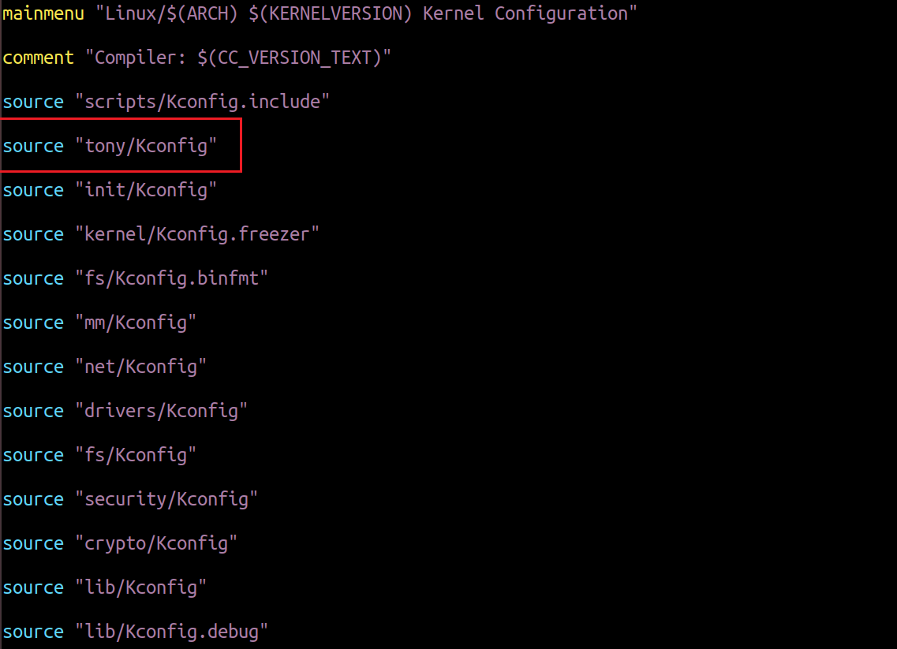
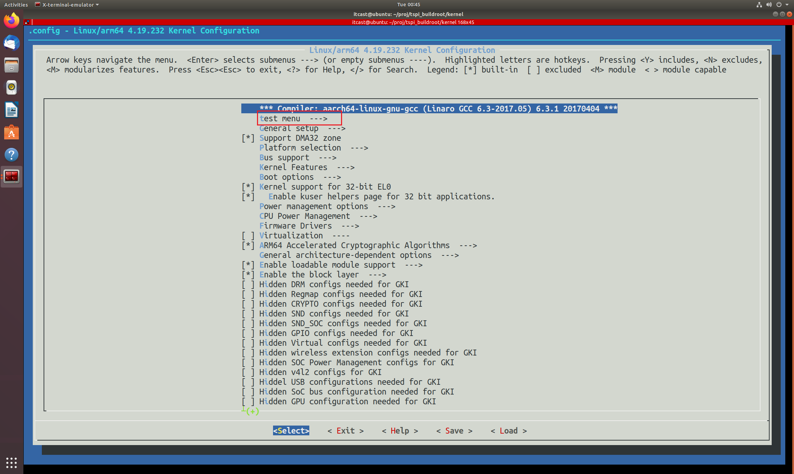
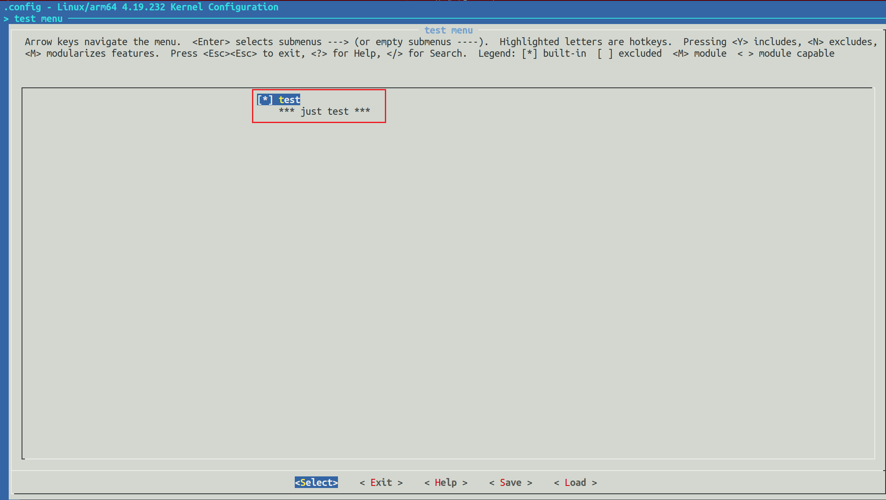
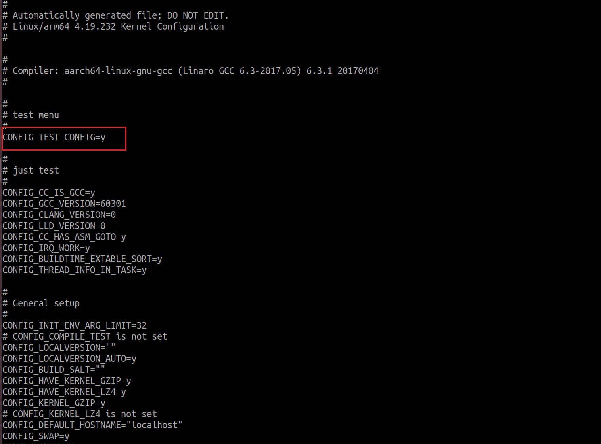

<!DOCTYPE lake>
<blockquote data-lake-id="u8e3a6040" id="u8e3a6040"><p data-lake-id="u9bea9247" id="u9bea9247"><span class="lake-fontsize-12" data-lake-id="ubdc0c4c0" id="ubdc0c4c0" style="color: rgb(0,0,0)">我们就可以自己在图形化配置界面中来自定义一个菜单，</span></p><p data-lake-id="uef82e215" id="uef82e215"><span class="lake-fontsize-12" data-lake-id="udf4654bd" id="udf4654bd" style="color: rgb(0,0,0)">要定义 一个菜单，就要从 Kconfig 文件入手。因为图形化配置界面是 根据 Kconfig 文件来生成的！</span></p></blockquote><h1 data-lake-id="pu5vG" data-lake-index-type="2" id="pu5vG"><span data-lake-id="u7708e333" id="u7708e333" style="color: rgb(0,0,0)">从Kconfig到menuconfig</span></h1><ol list="uf94b57a9"><li data-lake-id="u26affb98" fid="u14a913ba" id="u26affb98"><span class="lake-fontsize-12" data-lake-id="u4a5ac01c" id="u4a5ac01c">在kernel下创建tony文件夹,并创建Kconfig文件</span></li><li data-lake-id="u86aad10d" fid="u14a913ba" id="u86aad10d"><span class="lake-fontsize-12" data-lake-id="ue1451fa4" id="ue1451fa4">打开kernel下的Kconfig,编辑,增加</span></li></ol><p data-lake-id="u0d608d3b" id="u0d608d3b"></p><ol list="u54ea3ba5" start="3"><li data-lake-id="uc767ea3f" fid="u449d6527" id="uc767ea3f"><span data-lake-id="ube34b8fe" id="ube34b8fe">编译tony/Kconfig文件,内容如下</span></li></ol><span class="yuque-card-unsupported">[codeblock]</span><blockquote data-lake-id="ubffbbcff" id="ubffbbcff"><p data-lake-id="u8b961887" id="u8b961887"><span class="lake-fontsize-12" data-lake-id="u57f1b441" id="u57f1b441" style="color: rgb(0,0,0)">在上面的代码中，我们在主菜单中添加了一个名为 test menu 的子菜单</span></p><p data-lake-id="uf2dcf036" id="uf2dcf036"><span class="lake-fontsize-12" data-lake-id="u44d4f191" id="u44d4f191" style="color: rgb(0,0,0)">然后在这个子菜单里面我们添加了一个名为 TEST_CONFIG 的配置项，</span></p><p data-lake-id="ue280e129" id="ue280e129"><span class="lake-fontsize-12" data-lake-id="u272232ca" id="u272232ca" style="color: rgb(0,0,0)">这个配置项变量类型为 bool，默认配置 为 Y，</span></p><p data-lake-id="u7372b7af" id="u7372b7af"><span class="lake-fontsize-12" data-lake-id="u4a21b126" id="u4a21b126" style="color: rgb(0,0,0)">帮助信息为 just test，</span></p><p data-lake-id="u7d60d991" id="u7d60d991"><span class="lake-fontsize-12" data-lake-id="udc915cfb" id="udc915cfb" style="color: rgb(0,0,0)">注释为 just test。</span></p><p data-lake-id="u368e9109" id="u368e9109"><span class="lake-fontsize-12" data-lake-id="u01f70e81" id="u01f70e81" style="color: rgb(0,0,0)">​</span><br/></p><p data-lake-id="u2ea8b483" id="u2ea8b483"><span class="lake-fontsize-12" data-lake-id="u1c40a6a0" id="u1c40a6a0" style="color: rgb(0,0,0)">选项类型包括bool,tristate,string,hex,int   最常见的是bool,tristate,string这三个</span></p><p data-lake-id="u3ae7813b" id="u3ae7813b"><span class="lake-fontsize-12" data-lake-id="ua0c930d0" id="ua0c930d0" style="color: rgb(0,0,0)">bool类型有两种值:y和n</span></p><p data-lake-id="u449557da" id="u449557da"><span class="lake-fontsize-12" data-lake-id="udb76da43" id="udb76da43" style="color: rgb(0,0,0)">tristate有三种值:y m n</span></p><p data-lake-id="u9973a0da" id="u9973a0da"><span class="lake-fontsize-12" data-lake-id="ua1ed1f07" id="ua1ed1f07" style="color: rgb(0,0,0)">string为字符串类型</span></p><p data-lake-id="u1e33e9cf" id="u1e33e9cf"><span class="lake-fontsize-12" data-lake-id="u858efa85" id="u858efa85" style="color: rgb(0,0,0)">help表示帮助信息,当我们在图形化界面按下h按键,弹出来help的内容</span></p></blockquote><p data-lake-id="u92666c87" id="u92666c87"><span class="lake-fontsize-12" data-lake-id="u546ab80b" id="u546ab80b" style="color: rgb(0,0,0)">​</span><br/></p><ol list="u73679f89" start="4"><li data-lake-id="u83847dd9" fid="uab7d45d0" id="u83847dd9"><span class="lake-fontsize-12" data-lake-id="u9c96f25d" id="u9c96f25d">make menuconfig打开图形化配置界面</span></li></ol><p data-lake-id="u91f73217" id="u91f73217"></p><ol list="uedf6b2a6" start="5"><li data-lake-id="ud81caaff" fid="u74c24849" id="ud81caaff"><span data-lake-id="u707f3214" id="u707f3214">进入test menu配置</span></li></ol><p data-lake-id="u32d03a75" id="u32d03a75"></p><ol list="u3518ff6c" start="6"><li data-lake-id="udcee7937" fid="u50430325" id="udcee7937"><span data-lake-id="u4ab2e885" id="u4ab2e885">保存之后,可以看.config内容已经增加了</span></li></ol><p data-lake-id="u0ff97eeb" id="u0ff97eeb"></p><h1 data-lake-id="Lxpsf" data-lake-index-type="2" id="Lxpsf"><span data-lake-id="u28a09215" id="u28a09215">Kconfig依赖关系</span></h1><p data-lake-id="u7633319a" id="u7633319a"><span class="lake-fontsize-12" data-lake-id="ua899c0a4" id="ua899c0a4" style="color: rgb(44, 44, 54)">Kconfig中的依赖关系可以用 </span><strong><span class="lake-fontsize-12" data-lake-id="u411fb5ad" id="u411fb5ad" style="color: rgb(17, 24, 39)">depends on</span></strong><span class="lake-fontsize-12" data-lake-id="u61402a8b" id="u61402a8b" style="color: rgb(44, 44, 54)"> 和 </span><strong><span class="lake-fontsize-12" data-lake-id="ue57ceec5" id="ue57ceec5" style="color: rgb(17, 24, 39)">select</span></strong><span class="lake-fontsize-12" data-lake-id="uac1037e2" id="uac1037e2" style="color: rgb(44, 44, 54)">。</span></p><p data-lake-id="uadbda94a" id="uadbda94a"><strong><span class="lake-fontsize-12" data-lake-id="u7f090cba" id="u7f090cba" style="color: rgb(17, 24, 39)">depends on 表示直接依赖关系：</span></strong></p><span class="yuque-card-unsupported">[codeblock]</span><p data-lake-id="u9c22a99a" id="u9c22a99a"><span class="lake-fontsize-12" data-lake-id="uaf891749" id="uaf891749" style="color: rgb(44, 44, 54)">表示选项A依赖选项B，只有当B选项被选中时，A选项才可以被选中。</span></p><p data-lake-id="ud5aceaed" id="ud5aceaed"><strong><span class="lake-fontsize-12" data-lake-id="u2437c179" id="u2437c179" style="color: rgb(17, 24, 39)">select 表示反向依赖关系：</span></strong></p><span class="yuque-card-unsupported">[codeblock]</span><p data-lake-id="u578f82a6" id="u578f82a6"><span class="lake-fontsize-12" data-lake-id="u0a596488" id="u0a596488" style="color: rgb(44, 44, 54)">在A选项被选中的情况下，B选项自动被选中。</span></p>